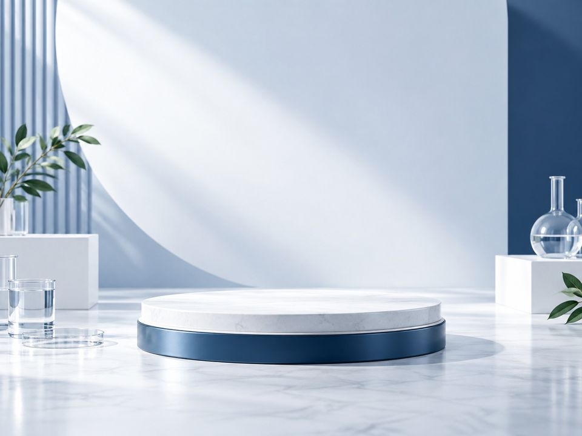

照護相關
提供糖尿病患及安養長照相關耗材儀器及專業傷口照護之有效產品。
圖片為情境示意
提供糖尿病患及安養長照相關耗材儀器及專業傷口照護之有效產品。
本公司經銷B'Braun原廠IDPN靜脈營養注射液，銷售各醫療診所。

本公司經銷B'Braun原廠IDPN靜脈營養注射液，銷售各醫療診所。
羊毛脂能預防皮膚過於乾燥，但有些皮膚專家則認為羊毛脂易導致敏感，引起皮膚過敏，並不是每一個人都適合。為解決皮膚易過敏的問題特別研發的新產品:專為對羊毛脂萃取物過敏者可使用的Trixo萃詩護手霜。